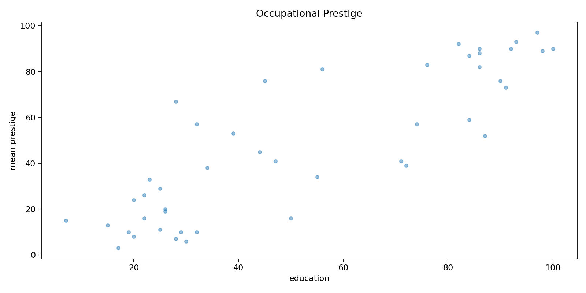

How are occupational education scores and prestige associated?
Among 45 complete observations, Pearson r = 0.852 and Spearman rho = 0.839.

| predictor | outcome |
|---|---|
| 7 | 15 |
| 15 | 13 |
| 17 | 3 |
| 19 | 10 |
| 20 | 24 |
| 20 | 8 |
| 22 | 26 |
| 22 | 16 |
| 23 | 33 |
| 25 | 29 |
| 25 | 11 |
| 26 | 19 |
| 26 | 20 |
| 28 | 67 |
| 28 | 7 |
| 29 | 10 |
| 30 | 6 |
| 32 | 57 |
| 32 | 10 |
| 34 | 38 |
| 39 | 53 |
| 44 | 45 |
| 45 | 76 |
| 47 | 41 |
| 50 | 16 |
| 55 | 34 |
| 56 | 81 |
| 71 | 41 |
| 72 | 39 |
| 74 | 57 |
| 76 | 83 |
| 82 | 92 |
| 84 | 87 |
| 84 | 59 |
| 86 | 82 |
| 86 | 90 |
| 86 | 88 |
| 87 | 52 |
| 90 | 76 |
| 91 | 73 |
| 92 | 90 |
| 93 | 93 |
| 97 | 97 |
| 98 | 89 |
| 100 | 90 |
Occupational aggregates and historical scores cannot represent individual outcomes.
Review source score definitions before interpreting magnitude.